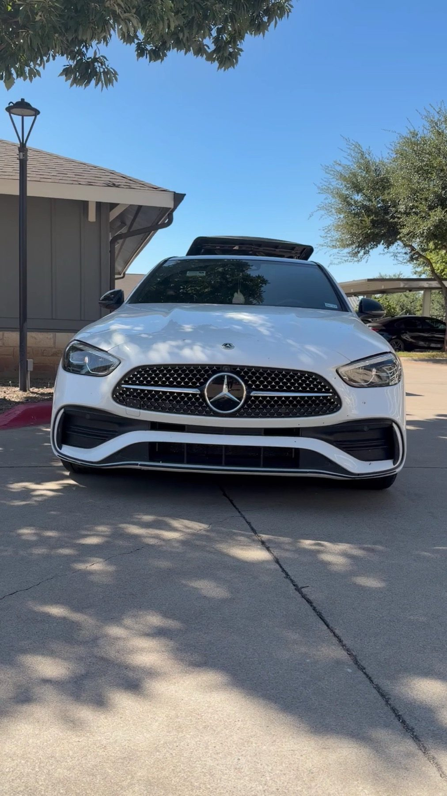

TruVex · Buda
About
The people behind TruVex.

About us
A detailer who takes his time
Eric runs TruVex. He takes his time on every vehicle, from family haulers to weekend cars, and hands it back looking new.
Patience is the job: foam on the paint, careful work on leather seats, spotless floor mats.
Evenings and weekends book up first. Call early if you have a date in mind.
- Takes the time We make sure you get a quality clean.
- Inside and out Interiors, exteriors and a full vehicle clean.
- Honest about limits Dents won't buff out. Existing damage stays.
BudaTexas
Find us
Find TruVex
Buda, TX
Serving Buda, Kyle, Creedmoor, Austin and San Marcos. Open daily; Sunday from 1 PM.
Hours
- Mon
- 7 AM–7 PM
- Tue
- 7 AM–7 PM
- Wed
- 7 AM–7 PM
- Thu
- 7 AM–7 PM
- Fri
- 7 AM–7 PM
- Sat
- 7 AM–7 PM
- Sun
- 1–7 PM
Ready for a clean you can see?
Call TruVex and set a time that works around your week.